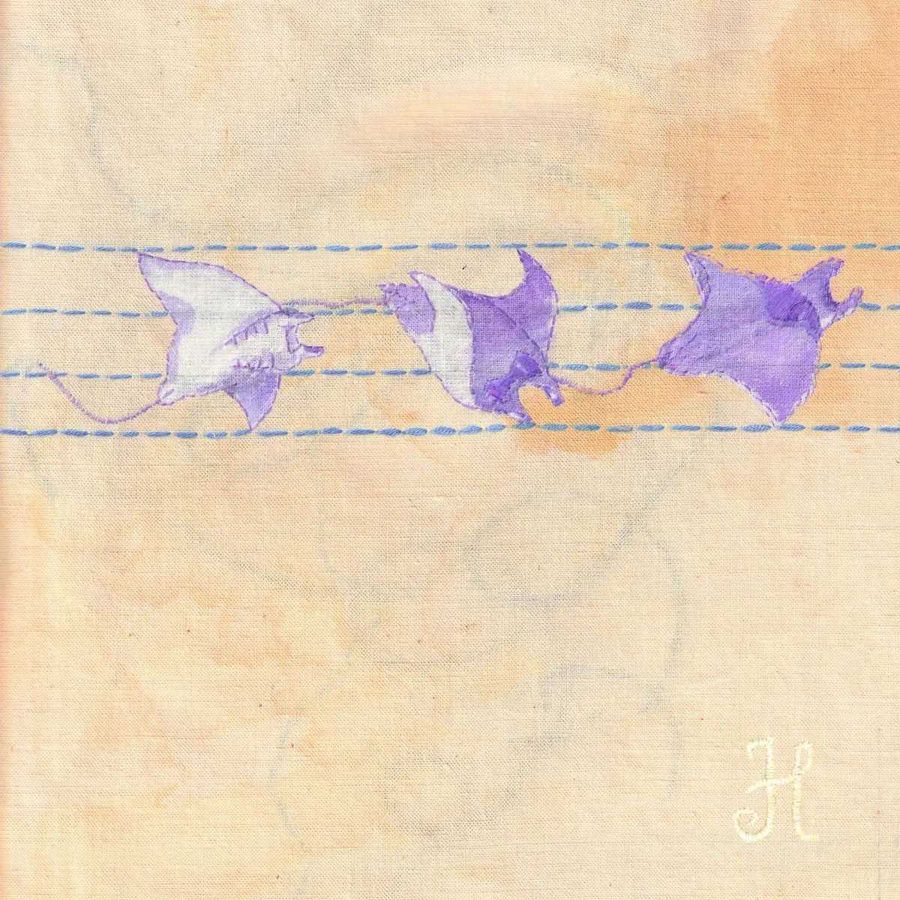

Publié le 19 novembre 2026

H JeuneCrack a publié l'album 3ème Mouvement le 13 novembre 2026 sur son label Opale Système. Ce projet de huit titres conclut la trilogie initiée début 2025 par le rappeur toulousain.
Le disque est accessible sur les plateformes d'écoute et sur la boutique officielle d'H JeuneCrack. Le projet s'ouvre par le morceau Todo bem et se termine sur Namedrop, sans la moindre invitation extérieure.
| Projet | Date de sortie | Format |
|---|---|---|
| 1er Mouvement | 7 février 2025 | 8 titres |
| 2ème Mouvement | 6 mars 2026 | 8 titres |
| 3ème Mouvement | 13 novembre 2026 | Album studio (8 titres) |
Comment s'articule l'album 3ème Mouvement ?
L'album rassemble huit morceaux originaux écrits et produits par l'artiste toulousain. Les pistes Todo bem, L'oued, Le plavon, 4k, Dope musique, Rec, Guanabana et Namedrop forment un ensemble compact de vingt-deux minutes. Le disque confirme une formule courte et directe, sans aucun morceau de remplissage.
La sortie du disque repose sur deux extraits marquants parus sur les plateformes. Le morceau Dope musique est paru au début du mois de novembre. Il suivait le Freestyle 3ème Mouvement diffusé le 21 octobre 2026 avec deux séquences instrumentales évolutives.
Selon la fiche Apple Music du projet, l'enregistrement s'inscrit dans une logique technique maîtrisée. L'ingénieur du son Johnny Ola signe le mixage de plusieurs pistes. Jack Palmer prend en charge le mastering global de l'album.
Pourquoi ce projet conclut-il un cycle important ?
H JeuneCrack construit sa musique en autarcie au sein de sa structure Opale Système. Il assure la totalité de la production, de l'écriture des textes jusqu'au façonnage des instrumentales. Cette méthode lui garantit une autonomie complète sur son calendrier et sur ses choix artistiques.
Les deux premiers volets comprenaient chacun huit morceaux et posaient les bases d'un style incisif. En publiant ce troisième volet, l'artiste referme un cycle créatif s'étalant sur vingt-et-un mois. Cette régularité prouve qu'un artiste indépendant peut construire un catalogue solide sans l'appui des majors.
Sa présence remarquée lors d'événements comme le Grünt Festival 2026 atteste de son ancrage dans la scène alternative. Il évolue aux côtés d'acteurs indépendants comme Mairo ou Beamer, tout en fédérant une communauté d'auditeurs très fidèle.
Où voir H JeuneCrack en concert pour cette fin de trilogie ?
Pour défendre cet album, le rappeur lance la tournée Mouvement Final Tour à travers la France. Ce parcours de dix dates en salle permet de découvrir l'intégralité du triptyque sur scène. Le dispositif technique préparé par Opale Système met en valeur les sonorités synthétiques de ses productions.
La tournée passera notamment le 3 mars 2027 par la salle du Bataclan à Paris. L'artiste se produira également à Lyon dans la salle de La Rayonne le 31 mars 2027. Les places sont disponibles directement sur la billetterie officielle d'Opale Système.